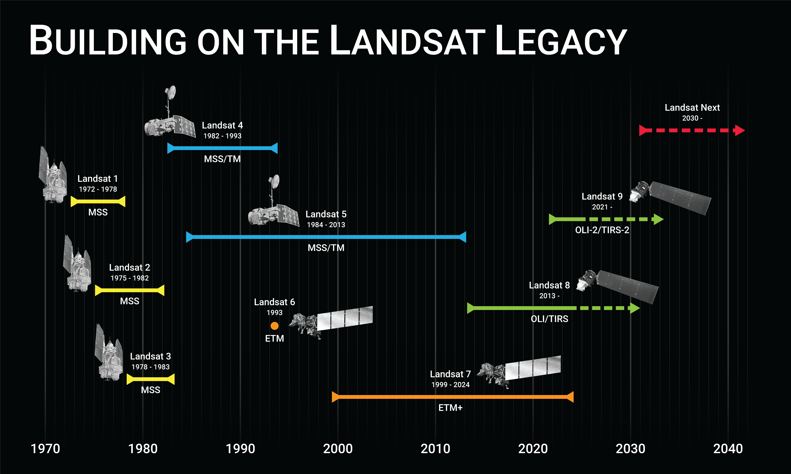
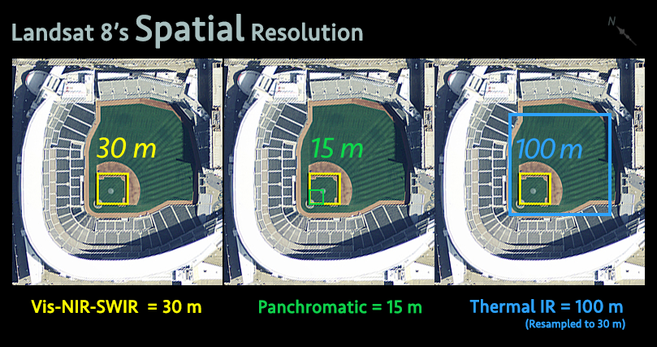
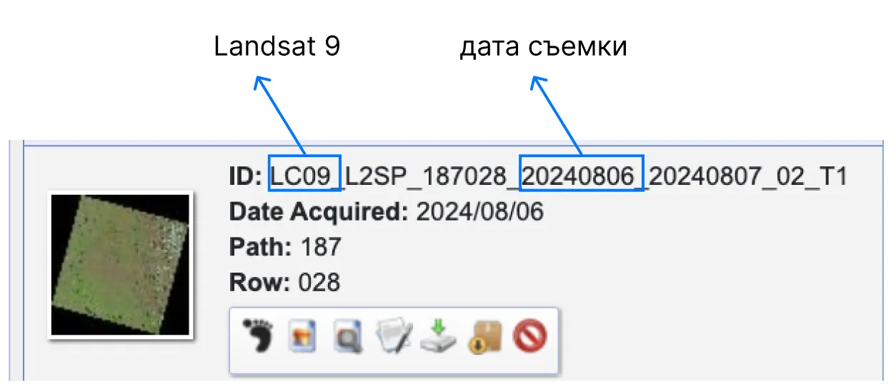

Загрузка данных дистанционного зондирования от открытых источников
Подготовлено на основе материалов портала Gis-lab.
Одним из основных источников материалов ДЗЗ, в том числе и бесплатных, является архив Геологической службы (ГС) США (USGS - United States Geological Survey). Доступ к нему возможен как для простого просмотра каталога, так и для непосредственного получения хранимых в нём материалов.
1 Просмотр содержимого архива ГС США
Посмотреть каталог и уменьшенные варианты (preview) хранимых в архиве ГС США материалов можно на сайте EarthExplorer (рис. 1).

Рис. 1. Главная страница сайта EarthExplorer
В структуре интерфейса главного окна сайта EarthExplorer выделяются следующие основные элементы:
Строка меню (под баннером USGS).
Панель поиска материалов (слева).
Карта (основная часть страницы).
Строка меню содержит несколько ссылок, главными из которых являются Login и Register, позволяющие, соответственно, авторизоваться на сайте зарегистрированным пользователям и зарегистрироваться тем, кто этого ещё не сделал ранее. Без авторизации нельзя получить материалы. Панель поиска предоставляет возможность задать критерии отбора необходимых материалов, хранимых в архиве, и посмотреть их привью на карте или в отдельном окне. Также можно получить доступ к метаданным, т.е. характеристикам, описывающим условия, при которых были получены материалы.
Панель поиска содержит 4 вкладки:
Search Criteria (Параметры поиска).
Data Sets (Наборы данных).
Additional Criteria (Дополнительные параметры).
Results (Результаты).
Переключение между этими вкладками осуществляется (после ввода необходимых параметров) с помощью кнопок внизу панели или с помощью ярлычков самих вкладок. До того как пользователь введёт основные критерии поиска и выберет набор данных, кнопки и ярлычки вкладок «Additional Criteria» и «Results» остаются недоступными.
1.1 Настройка поиска материалов
Данная вкладка предназначена для ограничения пространственно-временны́х рамок поиска данных. Иными словами, с помощью инструментов этой вкладки можно локализовать область интереса на карте и задать временной интервал даты регистрации искомых материалов.
Задание области интереса
Для определения области интереса можно воспользоваться несколькими способами:
Ввод адреса объекта.
Указание координаты сцены Landsat в системе WRS (Path/Row).
Выбор среди базы данных географических объектов.
Задание радиуса поиска.
Ввод географических координат вручную.
Отметка по карте Google.
Задание области интереса вокруг объекта по его адресу
Кнопка Address/Place (Адрес/Место) делает активной строку ввода адреса объекта. Система позволяет вводить адреса и названия как на английском, так и на русском языке. Например, если ввести строку «Россия, Воронеж, Университетская пл., 1» и нажать кнопку Show (Показать), то получившийся результат будет соответствовать показанному на рис. 2.

Рис. 2. Результат поиска объекта по адресу показан в виде таблицы
Можно видеть, что по введённому адресу был найден Воронежский госуниверситет, причём указаны географические координаты его главного корпуса. Если щёлкнуть по названию объекта, которое выделено в таблице синим цветом и подчёркиванием подобно ссылке, то на карте будет осуществлён переход к этому месту (рис. 3).

Рис. 3. Результат поиска объекта по адресу на карте Google
На этом рисунке объект показывается на карте в довольно мелком масштабе. Это масштаб, который позволяет хорошо обозревать сцены Landsat, но он не позволяет убедиться, что действительно найден главный корпус ВГУ. Однако для этого можно воспользоваться функционалом самой карты Google. Увеличив масштаб, увидим, что найденный объект соответствует искомому (рис. 4).

Рис. 4. Найденный объект в крупном масштабе
Указание координаты сцены Landsat в системе WRS
Если известна сцена, снимки для которой надо получить заново или за другие периоды времени, то указание её номера в системе WRS-2 – самый быстрый способ ограничить пространственные рамки области интереса. На вкладке Search Criteria есть кнопка Path/Row, которая позволяет ввести номер витка (path) и строки (row) интересуемой сцены. Если её нажать, то появятся несколько элементов интерфейса, в том числе список Type (тип), предоставляющий выбора из двух вариантов: WRS-1 и WRS-2. По умолчанию выбирается 2-й. Если это не так, то надо установить WRS-2. В качестве примера введём номер витка и строки сцены, соответствующей югу Воронежской области. Это сцена с номером 175/25. После нажатия на кнопку Show в панели Coordinates (Координаты) появится строка с географическими координатами точки, являющейся центром указанной сцены (рис. 5). А на карте будет помещена отметка, соответствующая этим координатам (рис. 6).

Рис. 5. Координаты центра сцены 175/25 в числовом представлении

Рис. 6. Отметка центра сцены 175/25 на карте Google
Выбор среди базы данных географических объектов
В систему заложена база данных большого числа географических объектов во всём мире. К сожалению, в отличие от поиска по адресу, при работе с этой БД можно работать только на английском языке. Для примера найдём малую реку Воронежской области Девица. Потребуется щёлкнуть по кнопке Feature (Объект) и в появившейся панели (рис. 7) – по кнопке World Features (Глобальные объекты). Затем ввести в строке Feature Name (Название объекта) в английской транслитерации – Devitsa; выбрать в списке Country (Страна) – Russia; в списке Feature Class (Класс объекта) – Hydrographic Features (Гидрографические объекты); в списке Feature Type (Подкласс объекта) – Stream (Поток). И нажать на кнопку Show. Результат поиска будет представлен в табличном виде (рис. 8).

Рис. 7. Ввод названия и выбор категорий объекта для поиска по базе данных

Рис. 8. Результат поиска объекта по БД представлен в табличном виде
Как можно убедиться, Google считает, что в России существует 3 реки Девица: 1) приток Усмани в Усманском районе Липецкой области (широта 52°); 2) приток Дона с устьем у г. Семилуки (широта 51,67°); 3) приток Дона с устьем недалеко от с. Коротояк Острогожского района Воронежской области (широта 51,06°). Выберем вторую Девицу, щёлкнув по её имени. Точка, соответствующая этой реке, будет показана на карте (рис. 9).

Рис. 9. Результат поиска объекта по БД представлен на карте Google
Задание радиуса поиска
Если есть задача найти все доступные материалы в пределах определённого радиуса от заданной точки, то следует поступить таким образом:
Установить параметр карты Google для выделения кругом: кнопка Options (Опции), вариант Circle (Окружность).
На вкладке Search Criteria нажать кнопку Circle.
Ввести координаты центра окружности (Lat: и Lon:), например, 52 и 39.
Указать радиус окружности (Radius:), например, 30.
Определить единицы измерения радиуса: Kilometers.
Нажать кнопку Show. Результат будет подобен показанному на рис. 10.

Рис. 10. Результат задания радиуса поиска представлен на карте Google
Ввод географических координат вручную
Если координаты интересующего объекта или района заранее известны, то их можно ввести вручную. Для этого надо нажать кнопку Degree/Minute/Second или Decimal в зависимости от формата задания координат: как набор значений градусов, минут и секунд или как градусы с долями градусов. Затем нажать на кнопку Add Coordinate (Добавить координату). В появившемся окне ввести значения Latitude (Широта) и Longitude (Долгота).
Отметка по карте Google
Пользуясь только картой Google, можно задать область интереса в виде полигона произвольной формы. Для этого надо установить опцию карты в значение Polygon (Полигон). Затем просто выполнить щелчки мышью в тех местах карты, где должны располагаться узлы полигона. Для примера обведём полигоном по периметру границу Воронежской области (рис. 11). После определения таким образом формы полигона сохраняется возможность коррекции положения его узлов. Но добавить новую точку можно только после последней.

Рис. 11. Результат задания области интереса в виде полигона по карте Google
Для быстрого удаления всех точек (способ действует для любого варианта определения области интереса) можно нажать на кнопку Clear Coordinates (Удалить координаты).
Определение временно́го диапазона даты регистрации материалов
В нижней части вкладки Search Criteria есть панель Data Range (Диапазон данных). В ней можно ввести значения Search from (Искать с) и to (до) как границы (начальная и конечная, соответственно) временного диапазона. Вводить даты можно как вручную, так и с помощью инструментов «Календарь» рядом с каждым значением. Введём для примера весь период качественных материалов Landsat с 1 марта 1984 г. до сего дня. Дата вводится в американском формате ММ/ДД/ГГГГ. Например, начальная дата будет выглядеть так: 03/01/1984. Одновременно можно выбрать какие месяцы каждого года следует рассматривать. Для этого есть параметр Search months (Искомые месяцы). По умолчанию для него установлено значение all (все). Однако при анализе растительности имеет смысл брать материалы не за все месяцы, а только те, в течение которых происходит вегетация. Например, с мая (May) по сентябрь (September) включительно. Следовательно в списке месяцев этого параметра надо включить галочки против требуемых месяцев и выключить у остальных. В конечном счёте установленные параметры будут выглядеть как показано на рис. 12.

Рис. 12. Параметры ограничения временно́го диапазона искомых данных
Установка параметров выдачи результатов
Рядом с ярлычком Data Range имеется ярлычок вкладки Result Options (Параметры результатов). На этой вкладке есть параметр Number of records to return (Количество возвращаемых записей) (рис. 13).

Рис. 13. Настройка выдачи результатов
По умолчанию по результатам поиска выдаётся не более 100 записей. Не часто, но бывает, что заданным критерием удовлетворяет больше данных. Чтобы получить доступ ко всем, а не только первым 100 сценам, следует увеличить значение этого параметра, например, установить 1000.
1.2 Вкладка Data Sets: что искать
После установки всех параметров на вкладке Search Criteria надо переходить к следующей вкладке Data Sets, с помощью которой можно выбрать источник поступления данных. Источники сформированы на этой панели в виде древовидной структуры. Как правило, каждая строка первого уровня – это название системы космического мониторинга, материалы с которой хранятся в архиве ГС. Если щёлкнуть по такой строке, то будет развёрнут набор строк второго уровня, которые дают уже непосредственный доступ к данным, доступным для просмотра и скачивания. Для примера найдём строку Landsat Archive (архив Landsat) и развернём строки второго уровня, стоящие за ней (рис. 14).

Рис. 14. Структура набора данных архива материалов миссии Landsat
Смысл названия материалов, доступных в архиве Landsat понятен из следующей таблицы (табл. 1).
Табл. 1. Описание источников данных архива Landsat
| № | Источник | Описание | Период действия |
|---|---|---|---|
| 1 | L8 OLI/TIRS | Материалы спутника № 8 миссии Landsat после выхода его на траекторию WRS – основной источник данных этого спутника | 10 апреля 2013 – н.в. |
| 2 | L8 OLI/TIRS Pre-WRS-2 | Материалы Landsat 8 до выхода на траекторию WRS | 11 февраля 2013 – 10 апреля 2013 |
| 3 | L7 ETM+ SLC-off (2003-present) | Материалы спутника № 7 миссии Landsat после того как на его борту вышел из строя модуль SLC | 31 мая 2003 – н.в. |
| 4 | L7 ETM+ SLC-on (1999-2003) | Материалы Landsat 7 в период после запуска при ещё работающем модуле SLC | Июль 1999 – 31 мая 2003 |
| 5 | L7 ETM+ Intl Ground Stations (Search Only) | Показ карты всемирной сети наземных станций, используемых для сбора и распространения материалов Landsat 7 и Landsat 8 | Июль 1999 – н.в. |
| 6 | L4-5 TM | Материалы, зарегистрированные с помощью аппаратуры TM, установленной на Landsat 4 и 5 | Июль 1982 – Май 2012 |
| 7 | L1-5 MSS | Материалы, зарегистрированные с помощью аппаратуры MSS, установленной на Landsat 1–5 | Июль 1972 – Октябрь 1992 |
Ориентируясь по этой таблице, можно предварительно выбрать те источники материалов, которые действовали в интересующий период времени. Поскольку ранее мы задали временной диапазон с 1 марта 1984 до настоящего времени, то теоретически следовало бы отметить галочкой все источники кроме №№ 2 и 5. Однако получить качественные материалы с радиометра MSS практически невозможно, поэтому не станем отмечать и источник № 7. Т.е. будем искать в архиве только кондиционные материалы со спутников Landsat 5, 7 и 8. Не стоит при этом отказываться от материалов Landsat 7 после выхода из строя модуля SLC (источник № 3), т.к. этот брак не столь существенен. Таким образом, оставим отметки у источников №№ 1, 3, 4 и 6
1.3 Вкладка Additional Criteria: уточнить
После задания основных параметров поиска и выбора хотя бы одного источника данных становится доступной вкладка Additional Criteria. На этой вкладке требуется устанавливать параметры для каждого источника данных по отдельности, т.к. для разных источников и параметры могут быть разными. Поэтому сначала надо выбрать один источник, установить параметры для него, затем выбрать другой источник, и т.д. Выбор источника данных, к которому будут применены дополнительные параметры, осуществляется с помощью списка Data Sets (Наборы данных) в самом верху одноимённой панели (рис. 15).

Рис. 15. Выбор источника данных, для установки дополнительных параметров
Из всех параметров, которые можно установить для данного (также как и для всех остальных) источника данных Landsat, мы будем использовать лишь предел облачного покрытия сцены (Cloud Cover). Этот параметр позволяет выбрать из архива только те сцены, которые покрыты облаками незначительно и, следовательно, содержат достаточно информации для анализа. Установим для параметра Cloud Cover значение Less than 30% (менее 30%) (рис. 16).

Рис. 16. Установка предела облачного покрытия сцены
1.4 Вкладка Results: что нашлось
После установки параметра предела облачного покрытия для каждого источника данных миссии Landsat можно перейти к просмотру результатов поиска по всем заданным критериям. Для этого надо переключиться на вкладку Results (Результаты). Также как и при установке дополнительных параметров, просмотр результатов производится отдельно для каждого источника данных. Изначально показаны 820 записей для сцен, зарегистрированных с помощью радиометра TM (рис. 17). Найденные записи представлены в виде списка, разделённого на несколько страниц по 10 записей на каждой. Для перехода между страницами можно использовать кнопки First (Первая), Previous (Предыдущая), Next (Следующая), Last (Последняя). Также доступна установка номера страницы сразу с помощью списка, который расположен между этими кнопками.

Рис. 17. Список результатов поиска
Каждая строка списка результатов содержит небольшое привью, краткую идентифицирующую информацию и панель инструментов, используемые для просмотра и заказа сцен (рис. 18). Здесь Entity ID – Идентификатор сцены, Acquisition Date – Дата регистрации.

Рис. 18. Панель инструментов для просмотра и заказа материалов
Если щёлкнуть мышью по маленькому привью космоснимка, то появится окно, содержащее изображение побольше, а также таблицу с метаданными – характеристиками режима его получения. Кнопки панели инструментов имеют название и назначение, описанное в табл. 2.
Табл. 2. Инструменты просмотра и заказа материалов
| № | Инструмент | Название | Описание |
|---|---|---|---|
| 1 |  |
Show Footprint | Показать отпечаток |
| 2 |  |
Show Browse Overlay | Показать наложенное изображение |
| 3 |  |
Compare Browse | Сравнить сцены |
| 4 |  |
Show Metadata and Browse | Показать метаданные и изображение сцены |
| 5 |  |
Download Options | Параметры загрузки |
| 6 |  |
Add to Bulk Download | Добавить к пакетной загрузке |
| 7 |  |
Order Scene | Заказать сцену |
| 8 |  |
Exclude Scene from Results | Исключить сцену из списка результатов |
На рис. 19 показаны отпечатки всех сцен, отображённых на первой странице результатов поиска. Цветные полупрозрачные прямоугольники на карте соответствуют форме и положению сцен, у которых включена кнопка Show Footprint. При включении этой кнопки она отмечается цветом, таким же, как и на карте обозначена соответствующая сцена. Можно видеть, что все собранные сцены, так или иначе, покрывают область интереса – территорию Воронежской области.

Рис. 19. Отпечатки всех сцен одной страницы результатов
Есть удобная возможность – посмотреть какую территорию на местности покрывает та или иная сцена, одновременно увидев её изображение. Для этого можно, включив для этой сцены кнопку Show Browse Overlay, увидеть её в проекции, наложенную на карту (рис. 20).

Рис. 20. Наложение выбранной сцены на карту Google
2 Какие космоснимки выбрать?
Космоснимков, удовлетворяющих заданным критериям поиска, может оказаться очень много, порой несколько сотен. Если случится так, то первым делом следует уточнить эти критерии чтобы отсеять максимум ненужных материалов. После того как это сделано надо просмотреть отобранные сцены и исключить те из них, которые содержат какие-либо изъяны на изображении. При этом надо обращать внимание на следующие моменты, которые должны помочь сделать выбор – скачивать ли сцену:
облачность;
дым от природных пожаров;
технический брак;
климатические феномены.
2.1 Облачность
При осуществлении выборки из архива ГС США практически никогда нет смысла брать сцены с плотным (более 30%) облачным покрытием. Поэтому правомерно ожидать, что на отобранных изображениях должно быть мало облаков. Но не всё так однозначно. Во-первых, даже те немногие облака, которые могут присутствовать при таком отборе, порой закрывают интересующий объект на космоснимке (рис. 21). Во-вторых, иногда фильтр облачности даёт сбои и в выборку попадают снимки, чуть ли не сплошь покрытые облаками.

Рис. 21. Сцена Landsat-5 (ID LT51770242011121KIS00 от 01-Май-11) с облачностью, концентрирующейся над территорией Воронежской области
2.2 Дым от природных пожаров
В иные годы, например, в 2010, почти по всей территории России летом было много природных пожаров, и часто космоснимки оказывались испорченными из-за дымки. При этом непосредственно облачное покрытие могло быть и небольшим (рис. 22).

Рис. 22. Фрагмент сцены Landsat-5 (ID LT51730242010218KIS01 от 06-Авг-10) с небольшой облачностью, но со сплошной дымкой от пожаров
2.3 Технический брак
Брак при регистрации радиометрической информации на спутниках Landsat особенно часто был в 80-е годы XX в. Он заключался как в систематическом искажении информации об отражающей способности поверхности в целом по сцене, так и появлении на ней размытых полос (рис. 23). Отдельно надо рассматривать технический брак, связанный с выходом из строя модуля SLC на спутнике Landsat-7, произошедшим 31 мая 2003 г. Этот брак заключается в появлении на изображении узких чёрных полос. По краям сцены полосы расширяются и порой могут привести к невозможности использования таких космоснимков (Рис. 24).

Рис. 23. Фрагмент сцены Landsat-5 (ID LT51750241984209AAA04 от 27-Июл-84) с техническим браком (размытая горизонтальная полоса)

Рис. 24. Фрагмент сцены Landsat-7 (ID LE71750242015158NSG00 от 07-Июн-15) с техническим браком – полосатой маской
2.4 Климатические феномены
Иногда природа преподносит сюрпризы и вместо зеленеющих зарослей можно обнаружить, что в тот год весна затянулась, и в мае ещё лежал снег. Если целью анализа космоснимков является оценка состояния растительности, то, очевидно, такие сцены использовать не стоит.
2.5 Выбор коллекции снимков
Наиболее доступной и поелзной является коллекция снимков, полученная миссиями Landsat.
Программа Landsat — наиболее продолжительный проект по созданию спутниковых снимков Земли. Первый из спутников в рамках программы был запущен в 1972; последний, на настоящий момент, Landsat 9— 27 сентября 2021.
Краткая хронолгия миссий:
Landsat 1 (изначально ERTS-1, Earth Resources Technology Satellite 1) — запущен 23 июля 1972, прекратил работу 6 января 1978
Landsat 2 (ERTS-B) — запущен 22 января 1975, прекратил работу 22 января 1981
Landsat 3 — запущен 5 марта 1978, прекратил работу 31 марта 1983
Landsat 4 — запущен 16 июля 1982, прекратил работу в 1993
Landsat 5 — запущен 1 марта 1984, прекратил работу 21 декабря 2012
Landsat 6 — запуск 5 октября 1993, на целевую орбиту не выведен
Landsat 7 — запущен 15 апреля 1999, функционирует. В мае 2003 произошел сбой модуля Scan Line Corrector (SLC). С сентября 2003 используется в режиме без коррекции линий сканирования, что уменьшает количество получаемой информации до 75 % от изначальной.
Landsat 8 — запущен 11 февраля 2013. 30 мая 2013 после окончания тестирования и настройки передан под управление USGS

Landsat 8/9 Operational Land Image (OLI) and Thermal Infrared Sensor (TIRS)1
| Band | Wavelength | Useful for mapping | Использование | |
|---|---|---|---|---|
| Band 1 - coastal aerosol | Побережья и аэрозоли (Coastal / Aerosol, New Deep Blue) | 0.43-0.45 | Coastal and aerosol studies | Анализ аэрозольных частиц в атмосфере |
| Band 2 - blue | синий | 0.45-0.51 | Bathymetric mapping, distinguishing soil from vegetation and deciduous from coniferous vegetation | Батиметрическое картографирование, разграничение почвы и растительности, а также хвойной и лиственной растительности |
| Band 3 - green | зеленый | 0.53-0.59 | Emphasizes peak vegetation, which is useful for assessing plant vigor | Акцентирует пик вегетации, может использоваться для оценки состояния ратительности |
| Band 4 - red | красный | 0.64-0.67 | Discriminates vegetation slopes | |
| Band 5 - Near Infrared (NIR) | Ближний инфракрасный | 0.85-0.88 | Emphasizes biomass content and shorelines | Выделяет содержание биомассы и береговые линии |
| Band 6 - Short-wave Infrared (SWIR) 1 | Коротковолновый инфракрасный диапазон | 1.57-1.65 | Discriminates moisture content of soil and vegetation; penetrates thin clouds | Выявляет влажность почвы и растительности; проникает в тонкие облака |
| Band 7 - Short-wave Infrared (SWIR) 2 | Коротковолновый инфракрасный диапазон | 2.11-2.29 | Improved moisture content of soil and vegetation; penetrates thin clouds | Улучшенное определение влажности почвы и растительности; проникает в тонкие облака |
| Band 8 - Panchromatic | Панхроматический | 0.50-0.68 | 15 meter resolution, sharper image definition | Разрешение 15 метров, более четкое изображение |
| Band 9 - Cirrus | Перистые облака | 1.36-1.38 | Improved detection of cirrus cloud contamination | Детекция конденсационных следов загрязнения |
| Band 10 - TIRS 1 | Длинноволновое инфракрасное излучение | 10.60-11.19 | 100 meter resolution, thermal mapping and estimated soil moisture | Разрешение 100 метров, тепловое картирование и оценка влажности почвы |
| Band 11 - TIRS 2 | Длинноволновое инфракрасное излучение | 11.50-12.51 | 100 meter resolution, improved thermal mapping and estimated soil moisture | Разрешение 100 метров, улучшенное тепловое картирование и оценка влажности почвы |
Landsat 4-5 Thematic Mapper (TM) and Landsat 7 Enhanced Thematic Mapper Plus (ETM+)
| Band | Wavelength | Useful for mapping | Использование |
|---|---|---|---|
| Band 1 - blue | 0.45-0.52 | Bathymetric mapping, distinguishing soil from vegetation and deciduous from coniferous vegetation | Анализ аэрозольных частиц в атмосфере |
| Band 2 - green | 0.52-0.60 | Emphasizes peak vegetation, which is useful for assessing plant vigor | Батиметрическое картографирование, разграничение почвы и растительности, а также хвойной и лиственной растительности |
| Band 3 - red | 0.63-0.69 | Discriminates vegetation slopes | Акцентирует пик вегетации, может использоваться для оценки состояния ратительности |
| Band 4 - Near Infrared | 0.77-0.90 | Emphasizes biomass content and shorelines | |
| Band 5 - Short-wave Infrared | 1.55-1.75 | Discriminates moisture content of soil and vegetation; penetrates thin clouds | Выделяет содержание биомассы и береговые линии |
| Band 6 - Thermal Infrared | 10.40-12.50 | Thermal mapping and estimated soil moisture | Выявляет влажность почвы и растительности; проникает в тонкие облака |
| Band 7 - Short-wave Infrared | 2.09-2.35 | Hydrothermally altered rocks associated with mineral deposits | Улучшенное определение влажности почвы и растительности; проникает в тонкие облака |
| Band 8 - Panchromatic (Landsat 7 only) | 0.52-0.90 | 15 meter resolution, sharper image definition | Разрешение 15 метров, более четкое изображение |
К сожалению, разрешение снимков может накладывать определенные ограничения на их использование, так как небольшие объекты могут не распознаваться на них.

Кроме непосредственно миссии, в результате которой были получены снимки, следует обратить внимание на уровень их обработки2.

Кроме описанных выше миссий существует еще большое количество различных систем спутникового зондирования, подробнее с ними, их параметрами и источниками получения можно ознакомиться по ссылке.
3 Как получить космоснимки?
Получать материалы из архива ГС США могут только зарегистрированные пользователи, выполнившие авторизацию на сайте EarthExplorer. Регистрация на сайте бесплатна, но требует заполнения довольно большой анкеты на английском языке.
3.1 Регистрация на сайте EarthExplorer
Для начала регистрации необходимо в строке меню главного окна EarthExplorer щёлкнуть по ссылке Register (Зарегистрироваться). Начнётся процесс регистрации, который будет проходить в 4 этапа. Названия этих этапов изображены как ярлычки вкладок на странице, которая откроется в самом начале (рис. 25):

Рис. 25. Первый этап процедуры регистрации на сайте EarthExplorer
User Credentials – параметры доступа пользователя.
Contact Demographic – область интереса пользователя.
Contact Information – контактная информация.
Complete Registration – завершение регистрации.
Прохождение этих этапов возможно только по порядку. В любой момент доступна кнопка Cancel (Отмена) в правом верхнем углу страницы для прерывания процесса регистрации.
Определение параметров доступа
К параметрам доступа относятся Username (Имя пользователя) и Password (Пароль). Справа от строк Username, New Password (Новый пароль) и Confirm New Password (Подтвердить новый пароль) размещены требования к их оформлению.
Требования к имени пользователя:
должно состоять из не менее 4 и не более 30 символов:
может содержать английские буквы и арабские цифры;
может содержать специальные символы «.», «@», «_» и «-».
Требования к паролю:
должен состоять из не менее 8 и не более 16 символов;
должен содержать хотя бы одну английскую букву;
должен содержать хотя бы одну арабскую цифру;
может содержать специальные символы «,», «-», «.», «|», «#» и «_».
После задания имени, пароля и подтверждения пароля надо ввести капчу – средство подтверждения того, что регистрация производится от имени живого человека, а не робота. Капча – это специально искривлённое изображение некоторой случайной фразы. Например, здесь это «idaypl and». Требуется буквально воспроизвести надпись в строке ниже, где написано Type the text (Впишите текст). Завершается первый этап нажатием на кнопку Continue (Продолжить).
Указание области интересов пользователя и применения данных
На втором этапе требуется заполнить анкету, цель которой - определить, в какой области и для решения каких задач пользователь собирается использовать данные из архива ГС США. Анкета эта обширна, поэтому ниже (табл. 3) приводится только пример возможного её заполнения.
Табл. 3. Анкета по интересам пользователя и применению данных
| № | Вопрос | Перевод вопроса | Возможный ответ |
|---|---|---|---|
| 1 | In what sector do you work? | В каком секторе народного хозяйства вы работаете? | Выбрать в списке пункт Academic Institution (ВУЗ) |
| 2 | Which of the following characterizes you as a user of remotely sensed data from USGS? | Что лучше характеризует вас как пользователя данных ДЗЗ из архива ГС США? | Отметить галочкой пункт «End user» (Конечный пользователь) |
| 3 | Does your work use remotely sensed data from the USGS? | Требуется ли для вашей работы использовать данные ДЗЗ из архива ГС США? | Выбрать вариант Yes (Да) |
| 4 | Of your work that uses remotely sensed data from USGS, what percentage is operational and non-operational? | Насколько регулярно в вашей работе используются данные ДЗЗ из архива ГС США? | Предлагается с помощью ползунка определить долю регулярности/нерегулярности в пределах от 0% до 100%. По умолчанию установлено 50% – оставить без изменения |
| 5 | What is the primary application for which you have used remotely sensed data from USGS in the past year? | Какова основная область применения, в которой вы используете данные ДЗЗ из архива ГС США? | Выбрать в списке пункт Education: university/college (Образование: университет/колледж) |
| 6 | In addition to the primary application, in what other areas have you used remotely sensed data from USGS in the past year? | В дополнение к основной области применения, в каких других сферах вы использовали данные ДЗЗ из архива ГС США в течение последнего года? | Отметить галочкой пункты Ecological/ecosystem science/monitoring (Экологический мониторинг) и Geology (Геология) |
| 7 | Over the next year, approximately how much of the remotely sensed data you acquire from USGS will you distribute to others to use as opposed to using it yourself? | В течение следующего года как много данных ДЗЗ (приблизительно), полученных вами из архива ГС США, будет передано другим лицам вместо самостоятельного использования? | Выбрать в списке пункт None of the data (Никакие данные) |
| 8 | Over the next year, how important will free and open access to remotely sensed data from USGS be to conducting your work? | В течение следующего года насколько важным для вашей работы будет бесплатный свободный доступ к данным ДЗЗ из архива ГС США? | Выбрать в списке пункт Neither Important nor Unimportant (Важно и неважно в равной мере) |
Завершается второй этап также кнопкой Continue.
Ввод информации о контактах пользователя
На третьем этапе пользователь должен представиться и сообщить некоторую персональную информацию. Обязательными для заполнения являются только пункты, перечисленные ниже:
First Name (Имя)
Last Name (Фамилия)
Address 1 (Адрес в пределах города). Например, «1, Universitetskaya pl.»
Country (Страна). Выбрать из списка пункт «Russian Federation»
City (Город). Ввести, например, «Voronezh»
Zip/Postal Code (Почтовый индекс). Например, «394045»
E-mail (Адрес электронной почты)
Retype E-mail (Повторно ввести адрес электронной почты)
Telephone (Телефон)
Крайне важно ввести действующий адрес электронной почты, т.к. на него придёт письмо со ссылкой для подтверждения регистрации, а потом и письма со ссылками на заказанные сцены. Завершение третьего этапа производится с помощью кнопки Continue.
Завершение регистрации
На четвёртом этапе будет показано резюме введённой ранее информации, которое надо проверить и нажать кнопку Submit Registration (Предоставить регистрацию). Появится сообщение Registration Complete! (Регистрация завершена). После этого потребуется ещё совершить несколько действий.
Дождаться прихода письма по указанному адресу электронной почты со ссылкой для подтверждения регистрации.
После перехода по ссылке из письма будет открыта страница Registration Confirmation (Подтверждение регистрации), на которой надо будет ввести имя пользователя, введённое при регистрации. После этого будет открыта страница для авторизации на сайте EarthExplorer.
Ввести имя пользователя и пароль.
3.2 Получение интересующих материалов
Если просматривать содержимое архива ГС США может любой, то скачивать из него какие-нибудь материалы – только пользователь, авторизованный на сайте EarthExplorer. Поэтому лучше всего будет на главной странице сайта (рис. 1) перейти по ссылке Login (Войти). Откроется страница Sign In (Вход для зарегистрированного пользователя) (рис. 26). На этой странице надо ввести имя пользователя и пароль, после чего нажать кнопку Sign In.

Рис. 26. Окно входа для зарегистрированного пользователя
Также на этой странице есть возможность восстановить пароль в случае его утраты. Этому служит ссылка forgot password? (забыл пароль?), при переходе по которой будет организована процедура его восстановления. Кнопка Create New Account (Создать новую учётную запись) позволит начать процесс регистрации тем пользователям, которые этого ещё не сделали. Когда так или иначе пользователь авторизовался на сайте EarthExplorer он может переходить к получению материалов. После подготовки выборки из содержимого архива ГС США, описанной в разделе 1, скачать данные будет возможно через один из двух путей:
скачивание сцены сразу из списка результатов, если эта сцена уже подготовлена для этого;
заказ сцены с последующим скачиванием после исполнения заказа, если перед обеспечением доступа её надо подготовить.
Скачивание подготовленной сцены
Многие сцены, популярные у пользователей, а также выданные кому-то недавно, могут быть скачаны непосредственно по прямой ссылке, доступной сразу. Выяснить, есть ли такой прямой доступ к архиву, можно по составу кнопок у панели инструментов сцены в списке результатов. Если панель инструментов сцены не содержит кнопки Order Scene, то это свидетельствует, что сцену можно скачать сразу (рис. 27).

Рис. 27. Пример сцены, которую можно скачать, не делая заказа

Для скачивания надо воспользоваться кнопкой Download Options. При щелчке по ней появится одноимённое окно (рис. 28).
.webp)
Рис. 28. Окно Download Options с возможностью скачать сцену
.webp)
Это окно предоставляет доступ к скачиванию как полномасштабных привью сцены, так и всей её целиком. Вся сцена доступна по щелчку на последней кнопке Download, рядом с которой написано Level 1 GeoTIFF Data Product. После в скобках указан размер файла-архива. В данном случае для сцены Landsat-8 – это почти 1 Гб. Имеет смысл инспектировать содержимое окна Download Options и в случае наличия кнопки Order Scene. Если сцена популярна, часто запрашивается разными пользователями, то она может быть доступна для скачивания как сразу, так и через заказ. Однако для непопулярных сцен можно увидеть, что в окне Download Options доступны только превью, а кнопка для скачивания всей сцены неактивна (рис. 29).

Рис. 29. Окно Download Options без возможности скачать сцену
В таком случае остаётся только делать заказ.
Заказ сцены для скачивания
Технически процесс заказа строится из следующих этапов:
Подготовка выборки из содержимого архива ГС США в соответствии с заданными критериями.
Просмотр выборки с отметкой для заказа тех сцен из неё, которые удовлетворяют требованиям к качеству данных.
Оформление заказа на отобранные сцены.
Ожидание исполнения заказа.
Получение письма со ссылками для скачивания материалов, загрузка их.
Этап 1. Подготовка выборки из содержимого архива ГС США
Этот этап был рассмотрен ранее.
Этап 2. Просмотр выборки с отметкой сцен для заказа
После получения выборки в соответствии с пространственными и временны́ми ограничениями на вкладке результатов поиска (рис. 17) будет представлен список собранных сцен. У каждой сцены есть панель инструментов с кнопками для просмотра и заказа материалов (рис. 18). Кнопка Order Scene работает как переключатель. Если она включена, то это означает, что эта сцена будет включена в заказ и, впоследствии, может быть скачана.
Этап 3. Оформление заказа на отобранные сцены
Под заказ предоставляются мало популярные сцены, хранящиеся на таких носителях, которые не позволяют получить к ним мгновенный онлайн доступ. Как правило, редко запрашиваются материалы довольно большой древности (более 5 лет), низкого качества (или с большим облачным покрытием), а также представляющие слабозаселённые территории. Если потребовалось всё же получить что-нибудь из такого, то, как было предложено на предыдущем этапе, требуется включить кнопку Order Scene для таких данных. Дальнейший процесс состоит из следующих шагов:
Просмотр корзины заказов.
Проверка заказа.
Отправка заказа.
Первый шаг – просмотр корзины – осуществляется нажатием кнопки View Item Basket (Просмотр корзины заказов). Это действие не зависит от того, какие результаты в данный момент показаны на панели результатов. Если для заказа отмечались сцены из разных источников данных, то все они будут включены в корзину. Окно корзины показано на рис. 30.

Рис. 30. Окно корзины заказа
С помощью этого окна можно посмотреть единым списком все выбранные для заказа сцены, сгруппированные по источникам данных. При желании есть возможность удалить какую-нибудь сцену, если окажется, что она была отмечена по ошибке. Изменения надо сохранить с помощью кнопки Save Changes (Сохранить изменения). Далее следует нажать кнопку Proceed to Checkout (Перейти к проверке).
Второй шаг – проверка заказа – является чисто формальным и предназначен для последнего инспектирования содержимого заказа перед его отправкой. Если возникли какие-то сомнения, то можно вернуться к просмотру корзины с помощью кнопки Return To Item Basket (Вернуться к корзине заказов). Если всё нормально, то надо нажать кнопку Submit Order (Отправить заказ).
Третий шаг – отправка заказа – завершается показом обобщающей таблицы по сделанному заказу. Под таблицей находится кнопка Return To EarthExplorer (Вернуться на сайт архива). Нажать её, если предполагается дальнейшая работа с архивом. В противном случае можно сразу выходить из системы.
Этап 4. Ожидание исполнения заказа
Как правило, через несколько секунд после отправки заказа по адресу электронной почты, указанному при регистрации, придёт письмо с уведомлением о получении заказа. В нём повторяется информация, представленная на третьем шаге предыдущего этапа. Ещё через несколько суток (4-5 при отсутствии непредвиденных проблем, как, например, приостановка работы правительства США в октябре 2013 г.) будет получено письмо с прямыми ссылками для скачивания. Одновременно эти сцены станут доступны для скачивания и через обычный интерфейс EarthExplorer.
Для скачивания данных российских систем спутникового наблюдения есть Фонд данных ДЗЗ, в котором после регистрации вы сможете осуществлять поиск и заказ нужных вам изображений на территорию исследования.
Сервис является платным.
Инструкция по работе с сервисом по ссылке.
Доступны к заказу снимки различного пространственного разрешения:
«Низкое» — снимки ЦА «МСУ-МР»;
«Среднее низкое» — снимки ЦА ШМСА-СР, КМСС (включая КМСС-М и КМСС-2), TM, MSS, ETM+, OLI, MSI;
«Среднее» — снимки ЦА ГСА, ШМСА-ВР, TM, ETM+, OLI, MSI;
«Высокое» — снимки ЦА Геотон-Л1(мультиспектральные каналы), ПСС, МСС (КА «Канопус-В1, Канопус-В2, Канопус-В4, Канопус-В-ИК), MSI;
«Детальное» — снимки ЦА Геотон-Л1 (панхроматический канал).
Сноски
Источники: https://www.usgs.gov/faqs/what-are-best-landsat-spectral-bands-use-my-research, https://innoter.com/sputniki/landsat-8/↩︎
Стандартные уровни обработки и форматы представления данных ДЗЗ из космоса. Мировой опыт - https://sovzond.ru/upload/iblock/487/2009_04_002.pdf↩︎